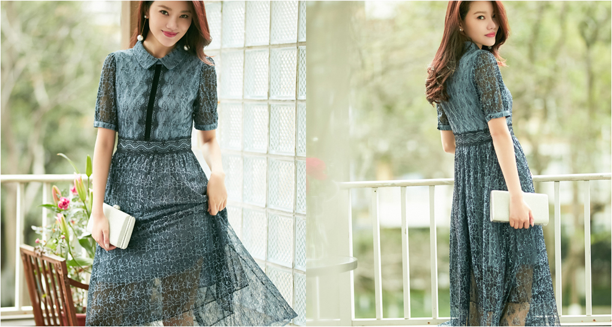
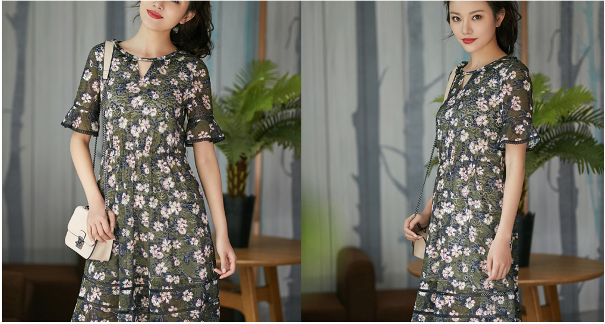
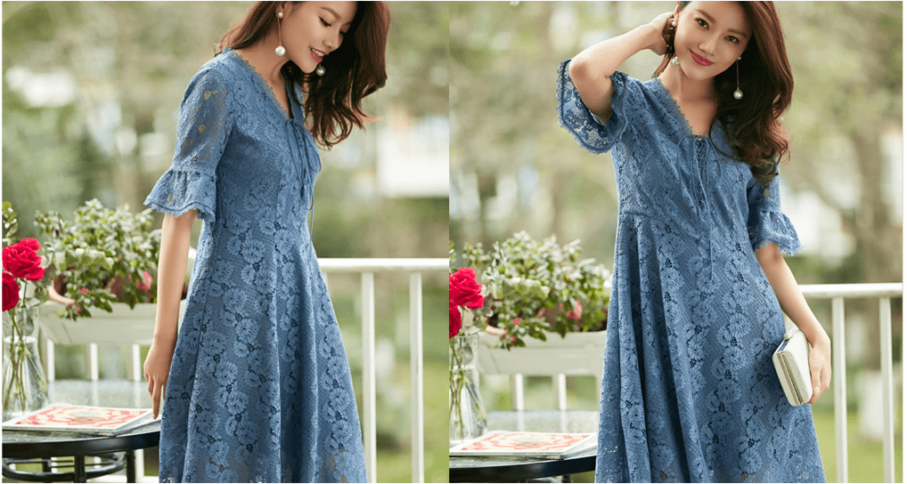

首页: 新闻动态 > 春日里的连衣裙,仙气又撩人
新闻动态
薄炒,就像少女时代的秘密- 样,欲说还休,一 且披笼罩。便如同落入了满是迷雾的仙境，走动之 间,轻索的裙摆随风摇曳,曼妙身姿若隐若现。

花朵是“仙女裙”的又一经典元素。集合了时下流行的芭蕾粉、山茶白之后。成片的花朵不仅没有拥挤的视觉感。反而错落有致,显得尤为清新。同时,玖姿设计师 又别出心裁地将花朵攀岩生长的过程展示于相身之上,连结的花叶加深了相互羁绊，能给穿着者节来更为跳脱生动的体验感。

蓄丝又何尝不是“仙女”的标配呢,得益于面料质感及立体剪裁,连衣裙兼具了柔欣与挺括,而喇叭袖口的设计则体现了现代言廷之感，既古典又浪漫。把董丝作为 点疆亦是“仙女相”的惯用手法,营纺衬衫式的上身设计具有较强的职业感，而蕾丝绣花相摆的配合,提升了整体的精致度，从而突出了女性魅力。
